მთავარი
თაიმლაინი
ჩვენ შესახებ
ძველი
ახალი
უახლესი
თაიმლაინი
ძველი ლიტერატურა
იაკობ
ცურტაველი
მე-5 საუკუნე
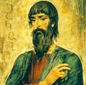
შუშანიკის წამება
476–483
იოანე
საბანისძე
მე-8 საუკუნე
აბო თბილელის წამება
~
გიორგი
მერჩულე
მე-10 საუკუნე
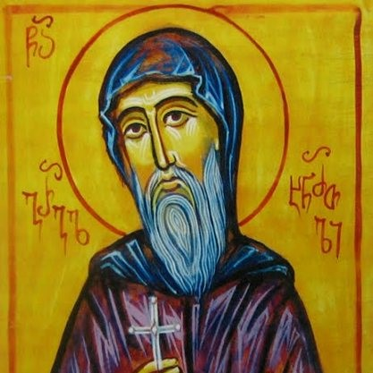
გრიგოლ ხანძთელის ცხოვრება
951
შოთა
რუსთაველი
მე-12 საუკუნე
ვეფხისტყაოსანი
~
სულხან-საბა
ორბელიანი
1658-1725
სიბრძნე სიცრუისა
1686–1695
დავით
გურამიშვილი
1705-1792
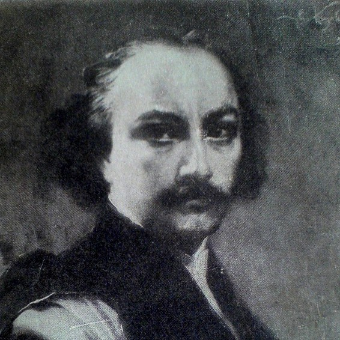
დავითიანი
1787
ახალი ლიტერატურა
ალექსანდრე
ჭავჭავაძე
1786-1846
გოგჩა
~
გრიგოლ
ორბელიანი
1804-1883
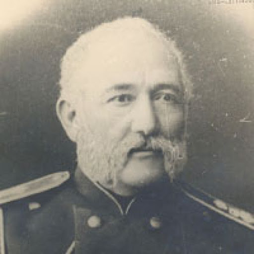
საღამო გამოსალმებისა
1840
პასუხი შვილთა
1874
თამარ მეფის სახე ბეთანიის ეკლესიაში
1877
ნიკოლოზ
ბარათაშვილი
1817-1845
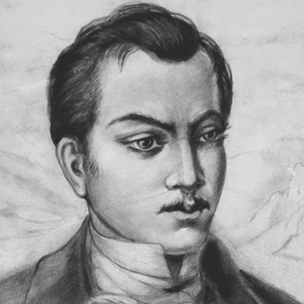
შემოღამება მთაწმინდაზე
1833/1836
ხმა იდუმალი
1836
ფიქრნი მტკვრის პირას
1837
ბედი ქართლისა
1839
არ უკიჟინო, სატრფოო...
1841
ცისა ფერს
1841
ვპოვე ტაძარი
1841
მერანი
1842
სულო ბოროტო
1843
ილია
ჭავჭავაძე
1837-1907
აჩრდილი - VII თავი
1859
კაცია-ადამიანი?!
1858–1863
მგზავრის წერილები
1861
ჩემო კალამო
1861
ბედნიერი ერი
1871
პასუხის პასუხი
1872
განდეგილი
1883
ოთარაანთ ქვრივი
1887
რა გითხრათ, რით გაგახაროთ?
1887
აკაკი
წერეთელი
1840-1915
აღმართ-აღმართ
1876
ქებათა ქება
1882-1900
თორნიკე ერისთავი
1884
განთიადი
1892
სულიკო
1895
გამზრდელი
1898
ალექსანდრე
ყაზბეგი
1848-1893
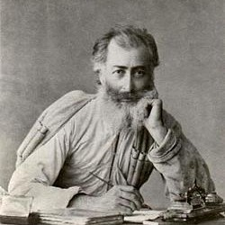
ხევისბერი გოჩა
1884
ვაჟა-ფშაველა
1861-1915
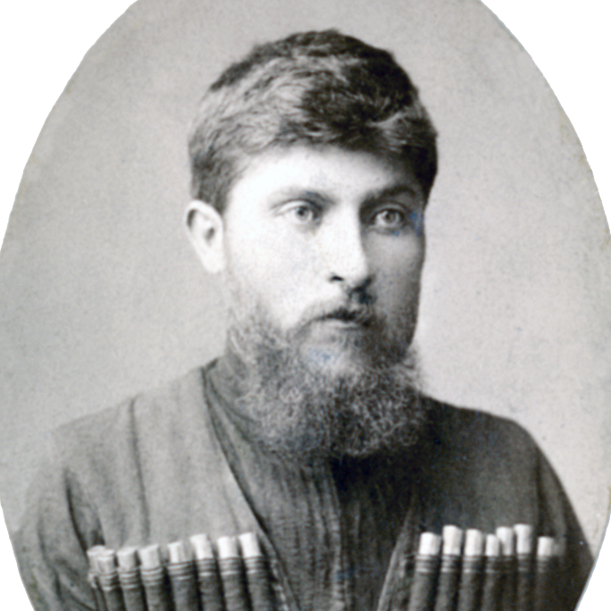
კაი ყმა
1887
ალუდა ქეთელაური
1888
ბახტრიონი
1892
ჩემი ვედრება
1893
სტუმარ-მასპინძელი
1893
ამოდის, ნათდება
1896
იას უთხარით ტურფასა
1903
კოსმოპოლიტიზმი და პატრიოტიზმი
1905
რამ შემქმნა ადამიანად
1913
დავით
კლდიაშვილი
1862-1931
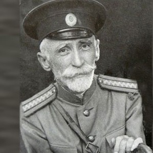
სამანიშვილის დედინაცვალი
1896
უახლესი ლიტერატურა
მიხეილ
ჯავახიშვილი
1880-1937
ჯაყოს ხიზნები
1925
ნიკო
ლორთქიფანიძე
1880-1944
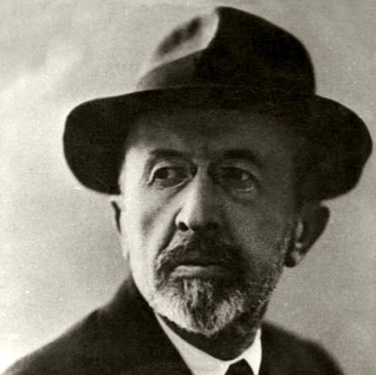
შელოცვა რადიოთი
1924-1928
გალაკტიონ
ტაბიძე
1891-1959
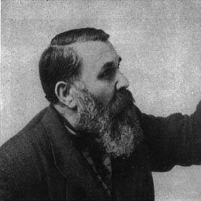
მე და ღამე
1913
მთაწმინდის მთვარე
1915
შერიგება
1915
მშობლიური ეფემერა
1915
თოვლი
1916
სილაჟვარდე ანუ ვარდი სილაში
1917
ქებათა ქება ნიკორწმინდას
1947
პოლიკარპე
კაკაბაძე
1893-1972
ყვარყვარე თუთაბერი
1928
კონსტანტინე
გამსახურდია
1893-1975
დიდოსტატის მარჯვენა
1939
პაოლო
იაშვილი
1894-1937
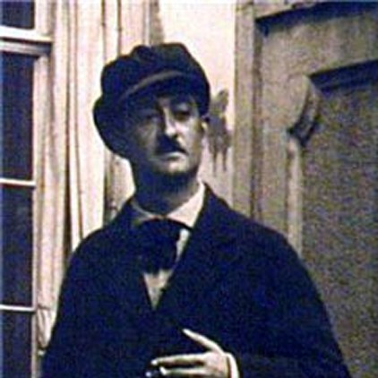
პოეზია
~
ტიციან
ტაბიძე
1895-1937
ლექსი მეწყერი
1927
ანანურთან
1929
გიორგი
ლეონიძე
1900-1966
ნინოწმინდის ღამე
1926
ყივჩაღის პაემანი
1928
ანა
კალანდაძე
1924-2008
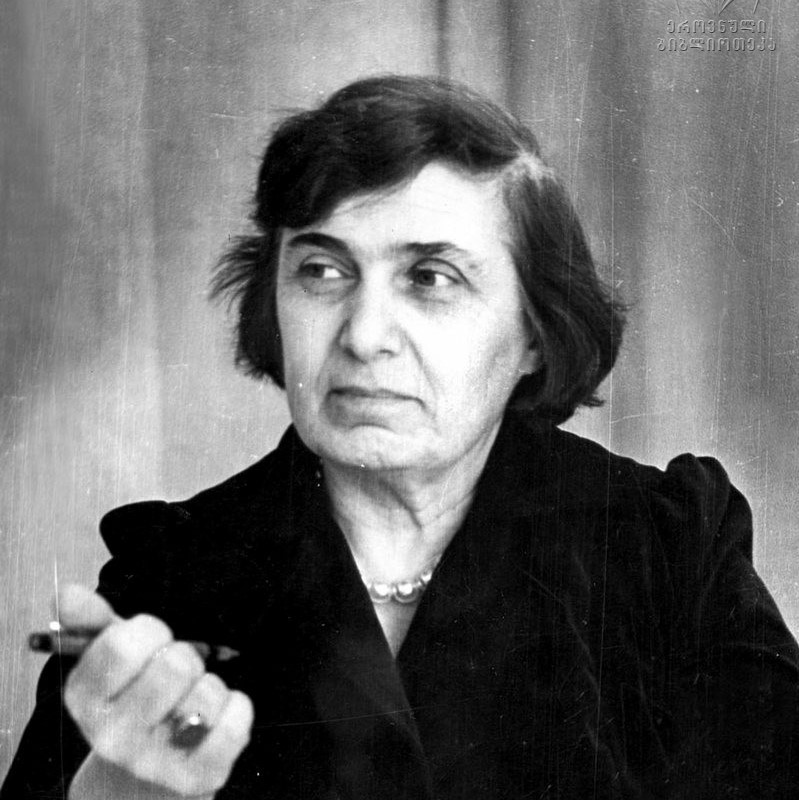
მკვდართა მზე ვარ
1946
გურამ
რჩეულიშვილი
1934-1960
ალავერდობა
1959
ჯემალ
ქარჩხაძე
1936-1998
იგი
1977
გურამ
დოჩანაშვილი
დ.1939
კაცი, რომელსაც ლიტერატურა
ძლიერ უყვარდა
1973